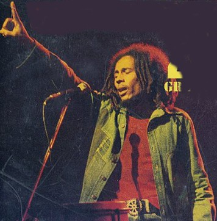
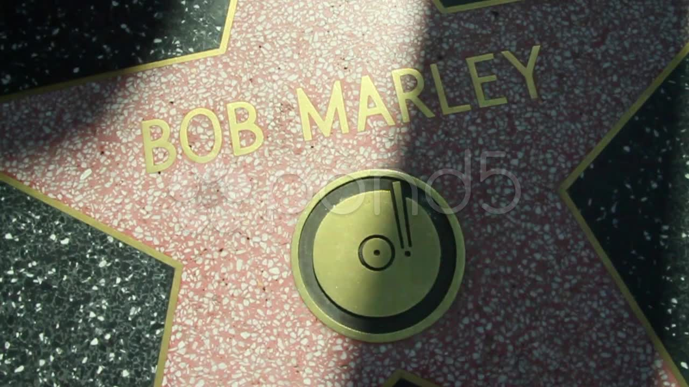

BOB MARLEY
Robert Nesta Marley, mais conhecido como Bob Marley, foi um cantor, guitarrista e compositor jamaicano, o mais conhecido músico de reggae de todos os tempos, famoso por popularizar o género.
Leia Mais
Marley já vendeu mais de 75 milhões de discos. A maior parte do seu trabalho lidava com os problemas dos pobres e oprimidos. Levou, através de sua música, o movimento rastafári e suas ideias de paz, irmandade, igualdade social, preservação ambiental, libertação, resistência, liberdade e amor universal ao mundo. A música de Marley foi fortemente influenciada pelas questões sociais e políticas de sua terra natal, fazendo com que o considerassem a voz do povo negro, pobre e oprimido da Jamaica. A África e seus problemas como a miséria, guerras e domínio europeu também foram centro de assunto das suas músicas, por se tratar da terra sagrada do movimento rastafári.
Hoje pode ser considerado o primeiro e maior astro musical e a maior voz dos países em desenvolvimento. A coletânea Legend, lançada três anos após sua morte e que reúne algumas músicas de álbuns do artista, é o álbum de reggae mais vendido da história. Bob foi casado com Rita Marley (de 1966 até a morte), uma das I Threes, que passaram a cantar com os Wailers depois que eles alcançaram sucesso internacional. Ela foi mãe de quatro de seus doze filhos (dois deles adotados), os renomados Ziggy e Stephen Marley (lê-se Stivân), que continuam o legado musical de seu pai na banda Melody Makers. Outros de seus filhos, Ky-Mani Marley, Julian Marley e Damian Marley (vulgo Jr. Gong) também seguiram carreira musical. Foi eleito pela revista Rolling Stone o 11º maior artista da música de todos os tempos.

O primeiro sinal da projeção de Bob Marley como astro internacional viria através de um presente de Chris Blackwell, para o proeminente novo artista. Logo após o impacto do álbum "Catch a Fire" no mercado europeu, Blackwell entregou a Marley as chaves da Island House, uma imponente mansão situada na Hope Road Avenue, parte rica de Kingston, inclusive muito próxima à sede do governo, que ficava rua abaixo com seus imensos jardins. Em pouco tempo o novo "yard" de Marley tornou-se um núcleo de criação e uma espécie de comunidade, com acesso livre para toda a família, amigos do gueto, rastas, namoradas de uns e outros, músicos, jornalistas estrangeiros, e mais alguns outros que eventualmente apareciam para jogar o famoso futebol de fim de tarde no estacionamento da casa. Bob Marley, como revelam relatos de amigos e família, dava dinheiro e comida para pessoas que vinham da favela pedir. Era comum formar filas de mulheres com bebés, crianças, jovens e até mesmo homens que queriam começar um pequeno negócio, na porta da casa do músico.
Este clima de euforia de uma nova vida comunitária religiosa e criativa encontraria sua tradução no disco "Burnin", segundo lançamento dos Wailers pela Island Records, no final de 1973. As músicas, com um conteúdo ainda mais politizado e social que as do álbum anterior, atingiam o público branco da Europa e Estados Unidos com clássicos como "Get Up, Stand Up", na qual Bob alerta as pessoas para que lutem por seus direitos , "I Shot the Sheriff", etc. Estava a acontecer uma verdadeira revolução musical e ideológica.
Celebridades como Paul McCartney, Mick Jagger começavam a admirar o ascendente trabalho do jamaicano. O lendário Eric Clapton ressurgiu regravando "I Shot the Sherif", de Marley, versão que atingiu os primeiros lugares nas paradas, colocou o guitarrista inglês novamente no cenário musical e ajudou a alavancar ainda mais a carreira de Bob Marley & The Wailers.

Com o lançamento do próximo disco, "Rastaman Vibration", em 1976, o cantor conquistou a fama nos Estados Unidos. Na Jamaica, a sua fama já era quase mística, e em grande parte graças às mensagens de suas músicas, o pensamento rastafári estava a tornar-se muito popular nos guetos jamaicanos. Em meio a este quadro, também havia o fato de o imperador etíope Haile Selassie, considerado pelos rastas como a representação de Deus na Terra, ter falecido no final de 1975.
-
1976 - Banda do Ano (Rolling Stone)
Augue consectetur sed interdum imperdiet et ipsum. Mauris lorem tincidunt nullam amet leo Aenean ligula consequat consequat.
-
1978 - Medalha de Paz do Terceiro Mundo pelas Nações Unidas
Augue consectetur sed interdum imperdiet et ipsum. Mauris lorem tincidunt nullam amet leo Aenean ligula consequat consequat.
-
1999 - Álbum do Século (Revista Time) por Exodus
Augue consectetur sed interdum imperdiet et ipsum. Mauris lorem tincidunt nullam amet leo Aenean ligula consequat consequat.
-
2001 - Uma estrela na Calçada da Fama de Hollywood
Augue consectetur sed interdum imperdiet et ipsum. Mauris lorem tincidunt nullam amet leo Aenean ligula consequat consequat.
-
2001 - Premiado com um Grammy pelo "Conjunto da Obra"
Augue consectetur sed interdum imperdiet et ipsum. Mauris lorem tincidunt nullam amet leo Aenean ligula consequat consequat.
-
2004: Rolling Stone Magazine classificou-o # 11 em sua lista dos "100 Maiores Artistas de Todos os Tempos
Augue consectetur sed interdum imperdiet et ipsum. Mauris lorem tincidunt nullam amet leo Aenean ligula consequat consequat.